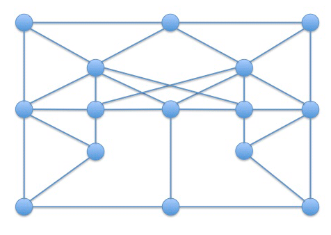

Alexander
Trykk SPACE for å gå fremover, ESC for oversikt over slidesVektorregning: vektorprodukt, skalarprodukt, projeksjon, dekomponering (Kap. 1.7)
Matriser og operasjoner på matriser (sum, multiplikasjon) (Kap. 9.2)
Mer om matrisemultiplikasjon (Kap. 9.2)
Lineære systemer (Kap. 9.1)
Determinanter (Kap. 9.3)
Inverse matriser (Kap. 9.3)
Matriser, nettverk og grafer
Matriser og rotasjoner